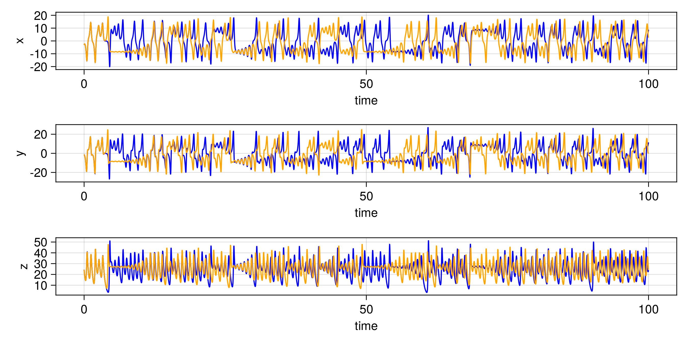
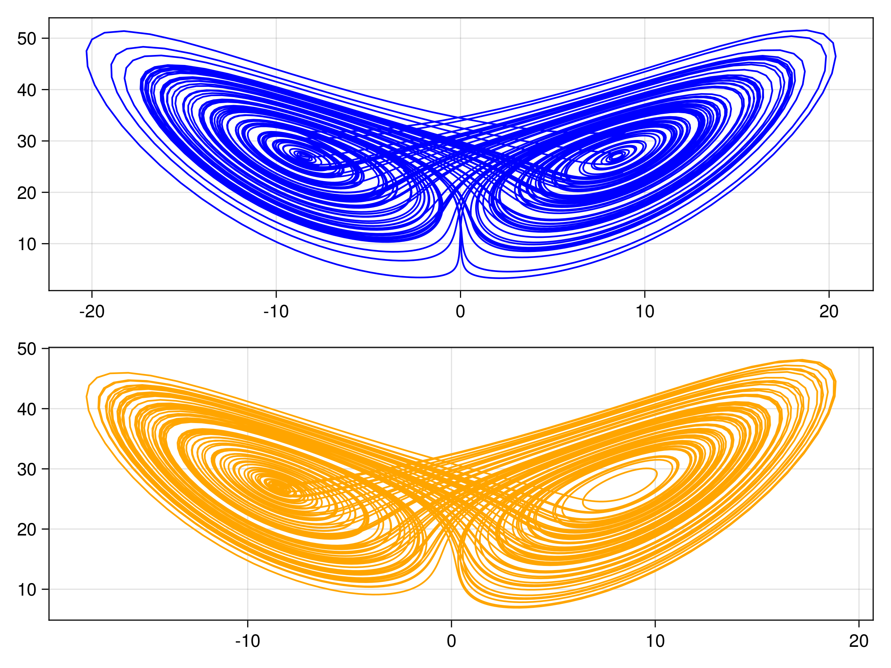
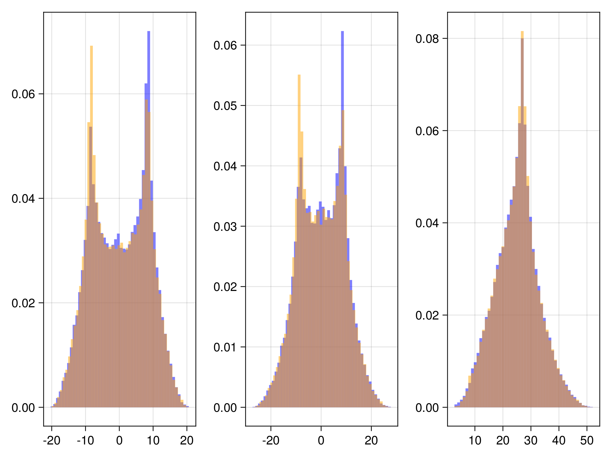
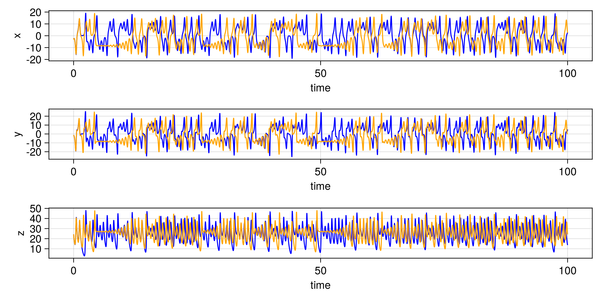
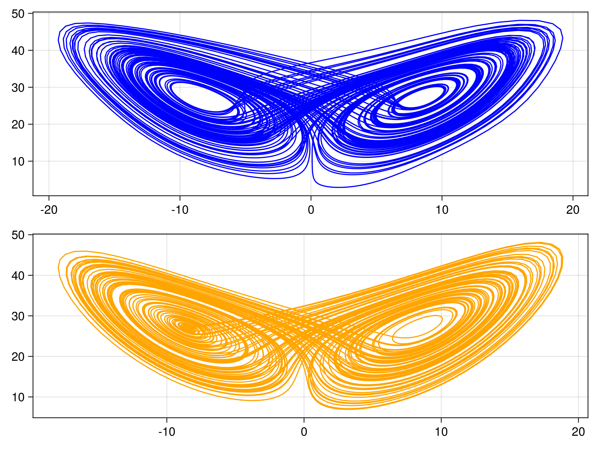
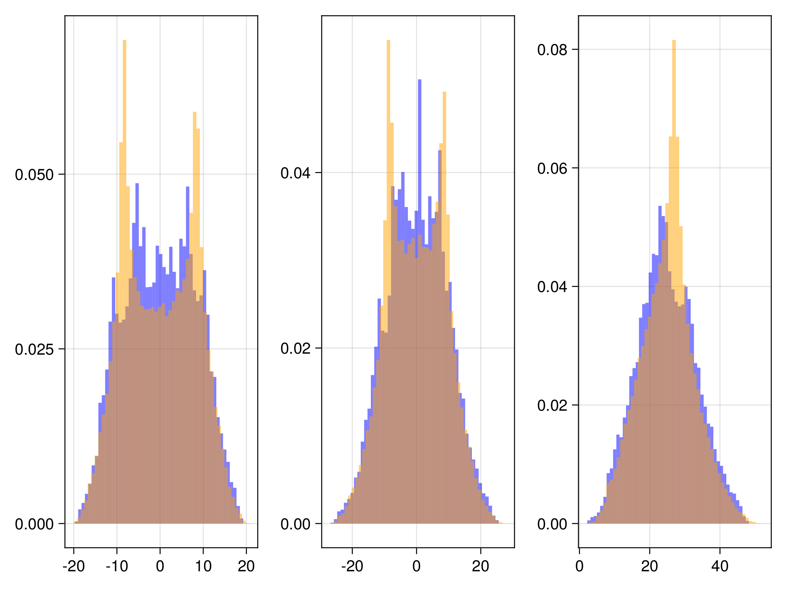
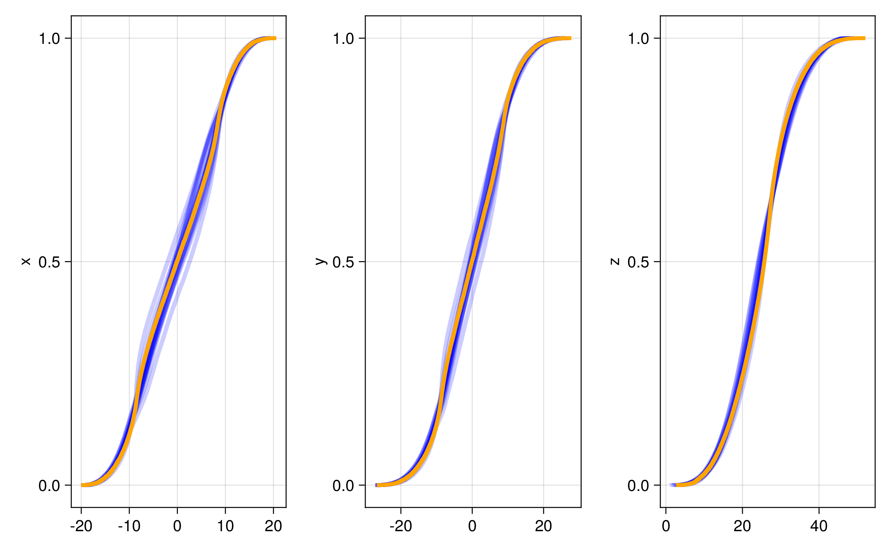

Integrating Lorenz 63 with an emulated integrator
In this example, we assess directly the performance of our machine learning emulators. The task is to learn the forward Euler integrator of a Lorenz 63 system. The model parameters are set to their classical settings $(\sigma, \rho, \beta) = (10,28,\frac{8}{3})$ to exhibit chaotic behavior. The discrete system is given as:
\[\begin{aligned} x(t_{n+1}) &= x(t_n) + \Delta t(y(t_n) - x(t_n))\\ y(t_{n+1}) &= y(t_n) + \Delta t(x(t_n)(28 - z(t_n)) - y(t_n))\\ z(t_{n+1}) &= z(t_n) + \Delta t(x(t_n)y(t_n) - \frac{8}{3}z(t_n)) \end{aligned}\]
where $t_n = n\Delta t$. The data consists of pairs $\{ (x(t_k),y(t_k),z(t_k)), (x(t_{k+1}),y(t_{k+1}),z(t_{k+1})+\eta_k\}$ for 600 values of $k$, with each output subjected to independent, additive Gaussian noise $\eta_k\sim N(0,\Gamma_y)$.
We have several different emulator configurations in this example that the user can play around with. The goal of the emulator is that the posterior mean will approximate this discrete update map, or integrator, for any point on the Lorenz attractor from the sparse noisy data. To validate this, we recursively apply the trained emulator to the state, plotting the evolution of the trajectory and marginal statistics of the states over short and long timescales. We include a repeats option (n_repeats) to run the randomized training for multiple trials and illustrate robustness of marginal statistics by plotting long time marginal cdfs of the state.
We will term scalar-output Gaussin process emulator as "GP", and scalar- or vector-output random feature emulator as "RF".
Walkthrough of the code
We first import some standard packages
using Random, Distributions, LinearAlgebra # utilities
using CairoMakie, ColorSchemes # for plots
using JLD2 # for saved dataFor the true integrator of the Lorenz system we import
using OrdinaryDiffEq For relevant CES packages needed to define the emulators, packages and kernel structures
using CalibrateEmulateSample.Emulators
# Contains `Emulator`, `GaussianProcess`, `ScalarRandomFeatureInterface`, `VectorRandomFeatureInterface`
# `GPJL`, `SeparablKernel`, `NonSeparableKernel`, `OneDimFactor`, `LowRankFactor`, `DiagonalFactor`
using CalibrateEmulateSample.DataContainers # Contains `PairedDataContainer`and if one wants to play with optimizer options for the random feature emulators we import
using CalibrateEmulateSample.EnsembleKalmanProcesses # Contains `DataMisfitController`We generate the truth data using OrdinaryDiffEq: the time series sol is used for training data, sol_test is used for plotting short time trajectories, and sol_hist for plotting histograms of the state over long times:
# Run L63 from 0 -> tmax
u0 = [1.0; 0.0; 0.0]
tmax = 20
dt = 0.01
tspan = (0.0, tmax)
prob = ODEProblem(lorenz, u0, tspan)
sol = solve(prob, Euler(), dt = dt)
# Run L63 from end for test trajectory data
tmax_test = 100
tspan_test = (0.0, tmax_test)
u0_test = sol.u[end]
prob_test = ODEProblem(lorenz, u0_test, tspan_test)
sol_test = solve(prob_test, Euler(), dt = dt)
# Run L63 from end for histogram matching data
tmax_hist = 1000
tspan_hist = (0.0, tmax_hist)
u0_hist = sol_test.u[end]
prob_hist = ODEProblem(lorenz, u0_hist, tspan_hist)
sol_hist = solve(prob_hist, Euler(), dt = dt)We generate the training data from sol within [tburn, tmax]. The user has the option of how many training points to take n_train_pts and whether these are selected randomly or sequentially (sample_rand). The true outputs are perturbed by noise of variance 1e-4 and pairs are stored in the compatible data format PairedDataContainer
tburn = 1 # NB works better with no spin-up!
burnin = Int(floor(tburn / dt))
n_train_pts = 600
sample_rand = true
if sample_rand
ind = Int.(shuffle!(rng, Vector(burnin:(tmax / dt - 1)))[1:n_train_pts])
else
ind = burnin:(n_train_pts + burnin)
end
n_tp = length(ind)
input = zeros(3, n_tp)
output = zeros(3, n_tp)
Γy = 1e-4 * I(3)
noise = rand(rng, MvNormal(zeros(3), Γy), n_tp)
for i in 1:n_tp
input[:, i] = sol.u[ind[i]]
output[:, i] = sol.u[ind[i] + 1] + noise[:, i]
end
iopairs = PairedDataContainer(input, output)We have several cases the user can play with,
cases = ["GP", "RF-scalar", "RF-scalar-diagin", "RF-svd-nonsep", "RF-nosvd-nonsep", "RF-nosvd-sep"]Then, looping over the repeats, we first define some common hyperparamter optimization options for the "RF-" cases. In this case, the options are used primarily for diagnostics and acceleration (not required in general to solve this problem)
rf_optimizer_overrides = Dict(
"verbose" => true, # output diagnostics from the hyperparameter optimizer
"scheduler" => DataMisfitController(terminate_at = 1e4), # timestepping method for the optimizer
"cov_sample_multiplier" => 0.5, # 0.5*default number of samples to estimate covariances in optimizer
"n_features_opt" => 200, # number of features during hyperparameter optimization
"n_iteration" => 20, # iterations of the optimizer solver
)Then we build the machine learning tools. Here we highlight scalar-output Gaussian process (GP), where we use the default squared-exponential kernel, and learn a lengthscale hyperparameter in each input dimension. To handle multiple outputs, we will use a decorrelation in the output space, and so will actually train three of these models.
gppackage = Emulators.GPJL() # use GaussianProcesses.jl
pred_type = Emulators.YType() # predicted variances are for data not latent function
mlt = GaussianProcess(
gppackage;
prediction_type = pred_type,
noise_learn = false, # do not additionally learn a white kernel
)we also highlight the Vector Random Feature with nonseparable kernel (RF-nosvd-nonsep), this can natively handle multiple outputs without decorrelation of the output space. This kernel is a rank-3 representation with small nugget term.
nugget = 1e-12
kernel_structure = NonseparableKernel(LowRankFactor(3, nugget))
n_features = 500 # number of features for prediction
mlt = VectorRandomFeatureInterface(
n_features,
3, # input dimension
3, # output dimension
rng = rng, # pin random number generator
kernel_structure = kernel_structure,
optimizer_options = rf_optimizer_overrides,
) With machine learning tools specified, we build the emulator object
# decorrelate = true for `GP`
# decorrelate = false for `RF-nosvd-nonsep`
emulator = Emulator(mlt, iopairs; obs_noise_cov = Γy, decorrelate = decorrelate)
optimize_hyperparameters!(emulator) # some GP packages require this additional call Plots
We predict the trained emulator mean, over the short-timescale validation trajectory
u_test_tmp = zeros(3, length(xspan_test))
u_test_tmp[:, 1] = sol_test.u[1] # initialize at the final-time solution of the training period
for i in 1:(length(xspan_test) - 1)
rf_mean, _ = predict(emulator, u_test_tmp[:, i:i], transform_to_real = true) # 3x1 matrix
u_test_tmp[:, i + 1] = rf_mean
endThe other trajectories are similar. We then produce the following plots. In all figures, the results from evolving the state with the true integrator is orange, and with the emulated integrators are blue.
Gaussian Process Emulator (Sci-kit learn: GP)
For one example fit
 Random Feature Emulator (RF-nosvd-nonsep)
For one example fit
 and here are CDFs over 20 randomized trials of the random feature hyperparameter optimization
